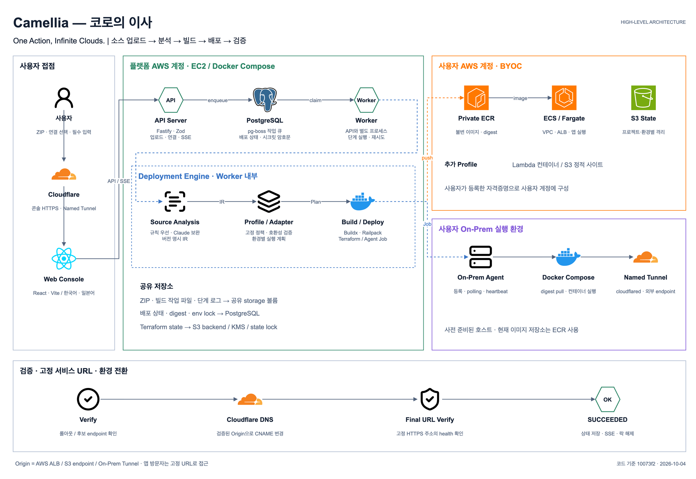

04 · 시스템 구조
하나의 이미지와 작업 상태를 두 실행 환경에 연결했습니다

상태를 남기는 Control Plane
분석부터 검증까지 이어지는 작업 상태를 PostgreSQL에 기록하고 pg-boss가 다음 단계를 실행하도록 구성했습니다. 중간에 프로세스가 중단돼도 마지막 상태를 기준으로 작업을 추적할 수 있습니다.
하나의 이미지, 두 실행 환경
AWS에서는 ECS Service가, 온프레미스에서는 Agent와 Docker Compose가 동일한 image digest를 실행합니다. 환경마다 다시 빌드하지 않아 전환 전후의 애플리케이션 차이를 줄였습니다.
이번 배포만 추적하는 Rollout
ECS 전체 상태가 아니라 해당 배포가 만든 Task Definition revision과 rollout을 추적했습니다. 이전 작업이나 다른 Task의 상태가 현재 배포 결과에 섞이지 않도록 범위를 제한했습니다.
검증 뒤에만 바꾸는 공개 URL
후보 환경이 정상 응답한 뒤 Cloudflare origin을 전환하고, 사용자가 접속하는 고정 URL을 다시 검증합니다. 마지막 확인이 실패하면 이전 origin을 유지합니다.
사용자가 접근하는 URL이 정상 응답해야 배포를 완료하고, 그렇지 않으면 기존 환경을 계속 제공합니다.